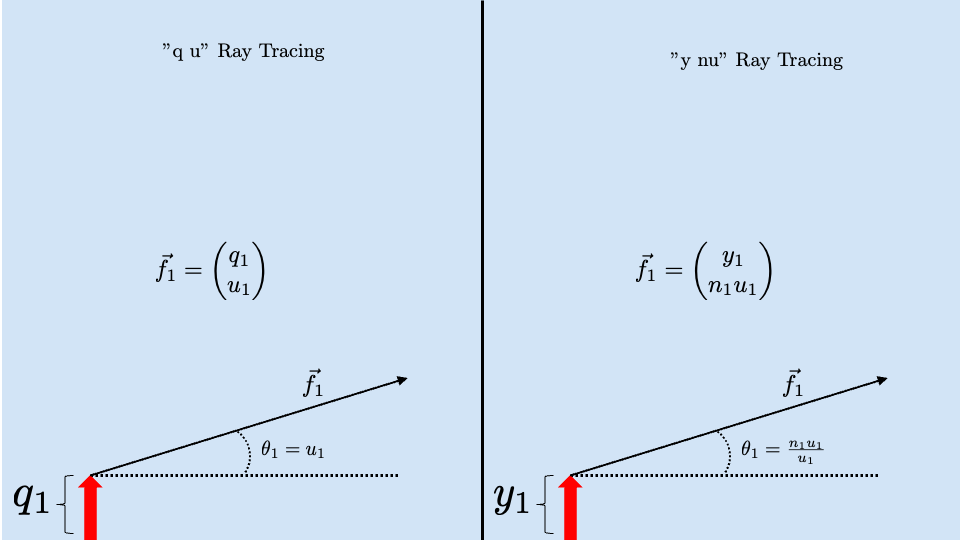

Lecture 2
In this class we will assume that Maxwell's Equations are linear and that if we want to work with polychromatic light we can break it into individual wavelengths and then treat each individually, summing at the end to get our total result. This breaks down in special cases that we may treat later
Space Dependent Equation from Last Time
In the previous lecture, we had the intermediate result:
We treated the time dependent portion previously and will now move into solving the space dependent equation:
First we will define the vector \(\vec{k}\) as being \(\hat{x} k_x + \hat{y} k_y + \hat{z} k_z\). Using this vector and expanding the Laplacian we get:
We can combine each of the x terms together and do the same for y and z to get:
Here we have two directions to choose from in our solution of R, our determination of R will depend on if we are treating the electric field as plane waves (option 1) which is the foundation for geometrical optics or as spherical waves (option 2) which is the foundation for wave optics.
Option 1 (Geometrical Optics):
Option 2 (Wave Optics):
For now we will be working in the domain of option 1. Our vector \(\vec{k}\) is the "ray vector" and we will largely be focused on tracing this vector and its behavior through optical systems.
When geometrical optics fail as a result of things like edge effects, we need a more comprehensive tool to solve problems. This is option two for wave optics which we will work with later. When this breaks down and we need to deal with individual photons this is the realm of quantum optics but we won't reach that point this class.
Ray Tracing
How do I move \(\vec{k}\) around in space?
We will explore this with the following example:

The variables are as follows: - \(n_i\) refractive index of region i - \(\mathcal{v}_i\) speed of light in region i - \(\theta_{i}\) angle that the vector i makes with interface normal.
First we need to figure out the length of the vector from A to the interface I:
then we will figure out the length from I to B:
Now we know the length and the speed of light in each medium so we can find the time, \(\tau\), the vector takes to get from A to I and then from I to B.
We sum these to get the total time:
Fermat's principle of least time states that this quantity will be minimized so we can find the minimum by taking the derivative and then setting it equal to zero and looking at the result.
This can be simplified to:
we can recognize
we can write \(\mathcal{v}_1\) and \(\mathcal{v}_2\) in terms of the speed of light \(\mathcal{v} = \frac{c}{n}\) to obtain:
Then we can multiply by c on both sides and subtract across one term which gives us the familiar result of Snell's law:
In the homework we will also derive Snell's law from Maxwell's equations using phase matching.
This is the basic result we want to use for mirrors and lenses where we trace the ray vector, \(\vec{k}\) through the system.
Optical Design
In this example we want to design the focal length of an optical system.

There are two approaches we can take - q u ("exact") ray tracing - y nu ("Paraxial Approximation") ray tracing
q u is far less common and we will mostly deal with y nu ray tracing.
Our object (the arrow) has a continuum of vectors coming off each point in many directions so we need a way to distinguish our desired vector, \(\vec{f}\) from all others.
q u Ray Tracing
In q u we distinguish \(\vec{f}\) using the height off the central axis (q) and the angle that \(\vec{f}\) makes with the central axis (u)
This type of ray tracing includes lots of trigonometry.
y nu Ray Tracing
y nu ray tracing uses the height of the ray off the central axis (y) and the refractive index multiplied by the angle the vector makes with the central axis (nu) to distinguish the desired vector.
y nu is called a paraxial approximation because we use the small angle approximations for sine and tangent
In the Taylor expansion for sine and theta this approximation holds for small angles. The Taylor expansion only contains terms of first, third, fifth, ... order and this is where the terms "first order correction", "third order correction", etc. originate from.
now we have a ray
Example: We want to trace a vector \(\vec{f}_1\) to \(\vec{f}_2\) some distance d away.

Our first vector has a height of \(y_1\) and the image \(y_2 = y_1 + \Delta y\)
Because the vector continues in a straight line, the angles that vectors \(\vec{f}_1\) and \(\vec{f}_2\) make with the central axis will be the same:
Because vectors \(\vec{f}_1\) and \(\vec{f}_2\) are 2x1 matrices, we need a 2x2 matrix to get from one to the other:
Using matrix multiplication, we obtain
Now we can determine A, B, C and D using the two equations: \(y_2 = y_1 + \frac{d}{n_1}(n_1 u_1)\) and \(n_1 u_1 = n_2 u_2\)
We can see clearly that \(A = 1\), \(B= \frac{d}{n}\), \(C=0\), and \(D = 1\).
This gives us the final result that to perform free space propagation of our ray in a medium with refractive index \(n_1\) we need to multiply \(\vec{f}\) by the matrix